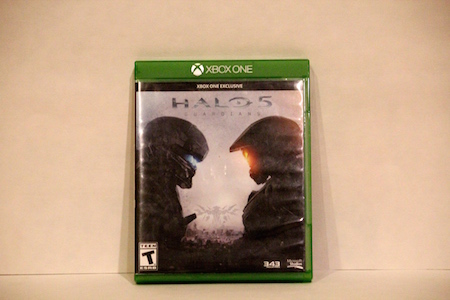
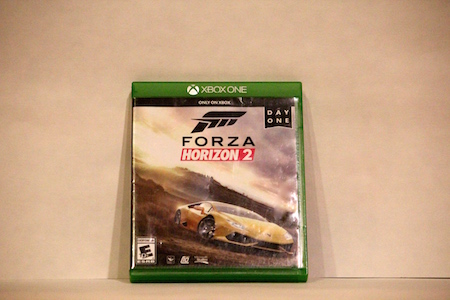

Video games have been a part of my life ever since I was a
child. Although there are many other games that
I like
to play on different consoles, here are my 4 favorites.
Video games have been a part of my life ever since I was a
child. Although there are many other games that |
#1
With 4 extensive stories, lots of action, and a knack |
 #2
A struggle between 2 groups of Spartans in the distant |
#3
Ever since I was a child, I was always |
 #4
The thrill of racing can never get old in |